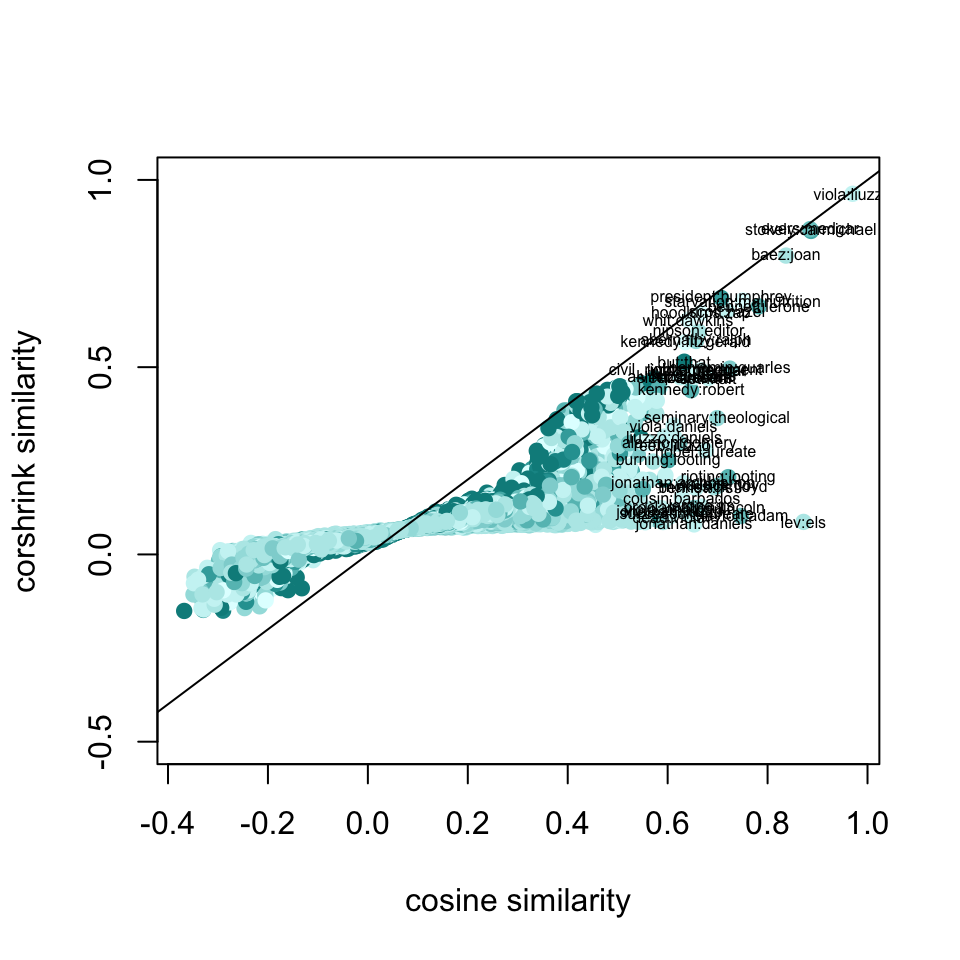
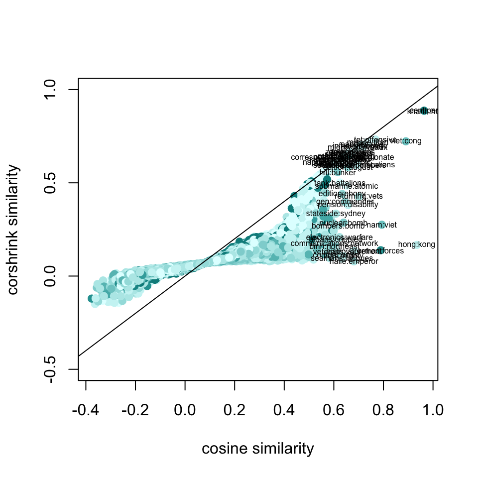
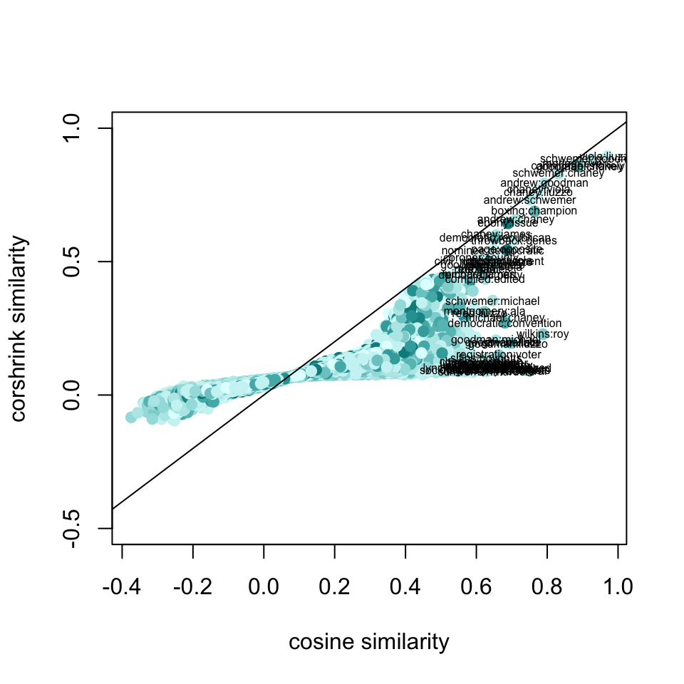

We look at CorShrink similarity measures and corresponding rankings of words and compare them with the empirical similarity and rankings without the CorShrink model. We pick two topic words to focus on - martin luther king, vietnam and civil rights and then perform bagging on all the different articles.
mat <- get(load("../output/word2vec_Ebony_newspapers/martin_luther_king_corshrink_newspapers.rda"))
cor_original <- mat$original
corshrink_mat <- mat$corshrinkword_frequencies_mat <- get(load("../output/word2vec_Ebony/word_frequencies.rda"))
word_presence_absence <- word_frequencies_mat
word_presence_absence[word_presence_absence > 0] = 1matched_word_frequencies <- word_presence_absence[, match(rownames(corshrink_mat), colnames(word_presence_absence))]num_occurrences_words <- colSums(matched_word_frequencies)num_occurrence_matrix <- sapply(num_occurrences_words, function(l) pmin(l, num_occurrences_words))word_pairs <- combn(colnames(cor_original),2)df1 <- data.frame("original" = cor_original[lower.tri(cor_original)],
"corshrink" = corshrink_mat[lower.tri(corshrink_mat)],
"nsamp" = num_occurrence_matrix[lower.tri(num_occurrence_matrix)])
df1$nsamp[which(is.na(df1$nsamp))] = max(df1$nsamp, na.rm = TRUE)
colfunc <- colorRampPalette(c("lightcyan", "darkcyan"))
plot(df1$original, df1$corshrink, bg = 2, col = colfunc(12)[df1$nsamp], pch = 19, cex = 1, xlab = "cosine similarity", ylab = "corshrink similarity", ylim = c(-0.5,1))
abline(0,1)
ids <- which(df1$original > 0.6)
ids2 <- order(df1$original - df1$corshrink, decreasing = TRUE)[1:20]
terms <- paste0(word_pairs[1,ids], ":", word_pairs[2,ids])
terms2 <- paste0(word_pairs[1,ids2], ":", word_pairs[2,ids2])
text(df1$original[ids], df1$corshrink[ids], terms,cex = 0.5)
tmp <- sort(corshrink_mat["martin_luther_king",], decreasing = TRUE)[1:30]
names2 <- setdiff(names(tmp), c("martin_luther_kings", "dr_kings", "luther"))
aa <- tmp[match(names2, names(tmp))]
aa[1:20]## martin_luther_king assassination thursday
## 1.0000000 0.3535663 0.3101434
## baez beloved nationality
## 0.2991863 0.2913269 0.2348352
## death king grief
## 0.2153953 0.2137205 0.2006771
## rev brawl reeb
## 0.1943223 0.1940207 0.1852525
## headed wright whit
## 0.1781186 0.1778320 0.1746063
## albert nathan injunction
## 0.1675022 0.1539193 0.1532850
## carter premature
## 0.1505520 0.1502884tmp <- sort(cor_original["martin_luther_king",], decreasing = TRUE)[1:30]
names2 <- setdiff(names(tmp), c("martin_luther_kings", "dr_kings", "luther"))
aa <- tmp[match(names2, names(tmp))]
aa[1:20]## martin_luther_king beloved mckissick
## 1.0000000 0.5290535 0.5125512
## baez rev nationality
## 0.5115412 0.5005528 0.4859384
## apostle assassination assassinated
## 0.4850871 0.4843161 0.4710754
## jamaican joan king
## 0.4580745 0.4463965 0.4435554
## fpo death newcomer
## 0.4213931 0.4187649 0.4150089
## requested floyd matthew
## 0.4129952 0.4056032 0.3962165
## fiery late
## 0.3926891 0.3909103mat <- get(load("../output/word2vec_Ebony_newspapers/vietnam_corshrink_newspapers.rda"))
cor_original <- mat$original
corshrink_mat <- mat$corshrinkword_frequencies_mat <- get(load("../output/word2vec_Ebony/word_frequencies.rda"))
word_presence_absence <- word_frequencies_mat
word_presence_absence[word_presence_absence > 0] = 1matched_word_frequencies <- word_presence_absence[, match(rownames(corshrink_mat), colnames(word_presence_absence))]num_occurrences_words <- colSums(matched_word_frequencies)num_occurrence_matrix <- sapply(num_occurrences_words, function(l) pmin(l, num_occurrences_words))word_pairs <- combn(colnames(cor_original),2)df1 <- data.frame("original" = cor_original[lower.tri(cor_original)],
"corshrink" = corshrink_mat[lower.tri(corshrink_mat)],
"nsamp" = num_occurrence_matrix[lower.tri(num_occurrence_matrix)])
df1$nsamp[which(is.na(df1$nsamp))] = max(df1$nsamp, na.rm = TRUE)
colfunc <- colorRampPalette(c("lightcyan", "darkcyan"))
plot(df1$original, df1$corshrink, bg = 2, col = colfunc(12)[df1$nsamp], pch = 19, cex = 1, xlab = "cosine similarity", ylab = "corshrink similarity", ylim = c(-0.5,1))
abline(0,1)
ids <- which(df1$original > 0.6)
ids2 <- order(df1$original - df1$corshrink, decreasing = TRUE)[1:20]
terms <- paste0(word_pairs[1,ids], ":", word_pairs[2,ids])
terms2 <- paste0(word_pairs[1,ids2], ":", word_pairs[2,ids2])
text(df1$original[ids], df1$corshrink[ids], terms,cex = 0.5)
tmp <- sort(corshrink_mat["vietnam",], decreasing = TRUE)[1:30]
names2 <- setdiff(names(tmp), c("ietnam"))
aa <- tmp[match(names2, names(tmp))]
aa[1:20]## vietnam war infantry submarine corso criminals
## 1.0000000 0.5386164 0.3808399 0.3563602 0.3467475 0.3166957
## korea senegalese homefront draftees raul brigade
## 0.3119768 0.2867804 0.2663929 0.2494299 0.2412500 0.2319872
## allowances adjusted platoons pentagon mortar battalion
## 0.2292183 0.2270523 0.2238198 0.2232487 0.2206783 0.2201875
## wound stationed
## 0.2185645 0.2171871tmp <- sort(cor_original["vietnam",], decreasing = TRUE)[1:30]
names2 <- setdiff(names(tmp), c("ietnam"))
aa <- tmp[match(names2, names(tmp))]
aa[1:20]## vietnam war combat infantry binh veteran
## 1.0000000 0.5388774 0.5325257 0.4781490 0.4690420 0.4671037
## wounded submarine korea airborne corso raul
## 0.4660362 0.4625806 0.4604579 0.4590019 0.4513956 0.4337358
## stationed senegalese dying soldier criminals army
## 0.4315332 0.4306750 0.4275406 0.4146945 0.4096768 0.4016124
## brigade adjusted
## 0.3999226 0.3992514mat <- get(load("../output/word2vec_Ebony_newspapers/civil_rights_corshrink_newspapers.rda"))
cor_original <- mat$original
corshrink_mat <- mat$corshrinkword_frequencies_mat <- get(load("../output/word2vec_Ebony/word_frequencies.rda"))
word_presence_absence <- word_frequencies_mat
word_presence_absence[word_presence_absence > 0] = 1matched_word_frequencies <- word_presence_absence[, match(rownames(corshrink_mat), colnames(word_presence_absence))]num_occurrences_words <- colSums(matched_word_frequencies)num_occurrence_matrix <- sapply(num_occurrences_words, function(l) pmin(l, num_occurrences_words))word_pairs <- combn(colnames(cor_original),2)df1 <- data.frame("original" = cor_original[lower.tri(cor_original)],
"corshrink" = corshrink_mat[lower.tri(corshrink_mat)],
"nsamp" = num_occurrence_matrix[lower.tri(num_occurrence_matrix)])
df1$nsamp[which(is.na(df1$nsamp))] = max(df1$nsamp, na.rm = TRUE)
colfunc <- colorRampPalette(c("lightcyan", "darkcyan"))
plot(df1$original, df1$corshrink, bg = 2, col = colfunc(12)[df1$nsamp], pch = 19, cex = 1, xlab = "cosine similarity", ylab = "corshrink similarity", ylim = c(-0.5,1))
abline(0,1)
ids <- which(df1$original > 0.6)
ids2 <- order(df1$original - df1$corshrink, decreasing = TRUE)[1:20]
terms <- paste0(word_pairs[1,ids], ":", word_pairs[2,ids])
terms2 <- paste0(word_pairs[1,ids2], ":", word_pairs[2,ids2])
text(df1$original[ids], df1$corshrink[ids], terms,cex = 0.5)
tmp <- sort(corshrink_mat["civil_rights",], decreasing = TRUE)[1:30]
names2 <- setdiff(names(tmp), c("civil", "rights"))
aa <- tmp[match(names2, names(tmp))]
aa[1:20]## civil_rights movement workers documentary leaders
## 1.0000000 0.5000871 0.4247906 0.2585608 0.2525841
## national legislation democrat involvement separatist
## 0.2507434 0.2492312 0.2392148 0.2302046 0.2205221
## political freedom nonviolent andrew aided
## 0.2146423 0.2043344 0.2042810 0.2012858 0.1906563
## kennedys federal revealed tucker politics
## 0.1817611 0.1769108 0.1744746 0.1741423 0.1721833tmp <- sort(cor_original["civil_rights",], decreasing = TRUE)[1:30]
names2 <- setdiff(names(tmp), c("civil", "rights"))
aa <- tmp[match(names2, names(tmp))]
aa[1:20]## civil_rights movement workers legislation morrow
## 1.0000000 0.6362527 0.4956718 0.4498891 0.4441932
## kennedys movements andrew freedom coordinating
## 0.4414409 0.4242074 0.4142487 0.4115721 0.3985884
## separatist involvement voices distress schwemer
## 0.3956887 0.3956219 0.3940182 0.3934538 0.3870820
## leaders documentary anthem goodman aided
## 0.3860711 0.3855880 0.3848378 0.3809568 0.3787624sessionInfo()## R version 3.5.0 (2018-04-23)
## Platform: x86_64-apple-darwin15.6.0 (64-bit)
## Running under: macOS Sierra 10.12.6
##
## Matrix products: default
## BLAS: /Library/Frameworks/R.framework/Versions/3.5/Resources/lib/libRblas.0.dylib
## LAPACK: /Library/Frameworks/R.framework/Versions/3.5/Resources/lib/libRlapack.dylib
##
## locale:
## [1] en_US.UTF-8/en_US.UTF-8/en_US.UTF-8/C/en_US.UTF-8/en_US.UTF-8
##
## attached base packages:
## [1] stats graphics grDevices utils datasets methods base
##
## loaded via a namespace (and not attached):
## [1] compiler_3.5.0 backports_1.1.2 magrittr_1.5 rprojroot_1.3-2
## [5] tools_3.5.0 htmltools_0.3.6 yaml_2.1.19 Rcpp_0.12.17
## [9] stringi_1.2.2 rmarkdown_1.9 knitr_1.20 stringr_1.3.1
## [13] digest_0.6.15 evaluate_0.10.1This R Markdown site was created with workflowr